Archives : 2009-02
名词解释 @ Feb 27, 2009
在Sherry那里看到一些名词解释，转一下：
拯救：不要以为你能拯救一个坏男人，薄情的人，对谁都无情。
看穿：他到底好不好，只有在你们意见不合，他得不到你，你要和他分离这些不和谐的时候才看得出来。
不爱：如果一个人忍心让你孤独，看你为他受苦，他就是不爱你，不是忙，不是疏忽，不是不懂，不是考验，不是暂时遗忘，不是性情孤僻......只是，不，爱，你。
证明：当你努力向别人证明自己是幸福的，他是爱你的，也许你们已经到了爱的尽头。幸福的爱是安静而温和的，不需要证明和表演。
孙俪.女扮男装 @ Feb 26, 2009
无意中看到电视台播放的《奶娘》，每晚等着看这部连续剧的播出。看连续剧就象吃瓜子，吃了就停不下来，昨天看完后还不想睡，又看了部孙俪主演的电影《金山》 ，由中国和加拿大合拍，耗资千万美元，全部在加拿大拍摄。
买这部片时，并未作为主要电影来收藏，更象是零食似的补充。这一看，真是折服于孙俪的精湛演技，印象特别深刻的是当她知道自己的父亲是谁，知道的那一刻父亲已死在自己面前，孙俪表演出那种悲痛欲绝到无声的画面......之前还未从哪个演员身上体现过，不会觉得她是在“演”，也没有“卖弄”技巧、胡乱“耍”表情的油气，她是那么塌实、自然、真切，我已忘了她是演员，觉得片中的“小虎”就是她。
看到片尾我已拿着被头擦眼泪了，泪奔啊！事实上这部片的故事情节不算多新颖，但是从头至尾，会被孙俪的表演抓住，饶有兴致地一点点去体会。这一次，孙俪的演技真正是超出其他年轻大牌女影星了！强烈推荐该片。
持续的雨天 @ Feb 25, 2009
乘着中午没有下大雨，赶紧带LUKE出去便便。
从一天两次减少到一天只能出去一次。
LUKE，是逆来顺受型，一天一次便便也可以？
天气就象这色调一样阴沉，昨晚还雷电交加，据说日平均气温在10度以上，才算真正进入春季。理论上说打雷一年四季都会出现，只是冬天出现的机率相对少一些。在我的概念里，春天到了才会打雷。新闻说后天有可能出现雨加雪~无论冬天还是春天，都希望这雨水暂时停一停。
这张相片是俺家终点工拍的，还不错吧？呵呵~
她是从大山里来的，一家四口都在南京打工，人很本份也很传统，话不多。说是过两三年挣点钱，一家人回陕西老家盖个房子，不会在城里生活的。农民不工作还有土地，城里人呢？乱糟糟地挤在一个地方，争来斗去头破血流，也就是一日三餐，一间房，一张床，一次生命。
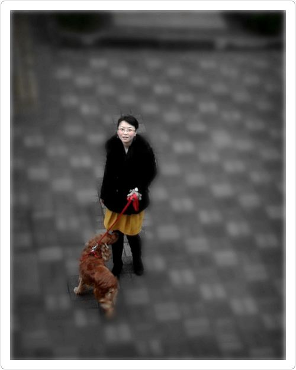
第一声。雷 @ Feb 24, 2009
刚才一声春雷乍响在耳边。
天空成深灰色了。
看到别人里面只穿了件体恤，外面一件羊毛大衣，没了。
瞧瞧自己，穿了两件毛衣，外面一件羽绒服......
最近，工作比较闲，不知道办公室里闹哄哄的是否是忙碌声？也不知道有多少人是真忙？据说有的人一天只收到一封MAIL，业务清淡的可以。我努力调整心态，仅把办公室当作一份工作去对待，仅仅是一份工作。有个笑话说那些没有被孙悟空打死的妖精都是有后台的......永远不要对生活奢望太多。我现在既能吃又能睡，象白痴一样活着，有什么不好？
DR.LI说：“问题不是你选择了什么工作，而是你选择了一份工作却不愿适应它。同一职业中总会有不同性格的人，而且成功者常常并不是我们认为有理想人格的人。
有时候，不是工作挫败了自己，而是我们对工作的期待挫败了自己。正如你选择了长春藤又希望它能开出绚丽的玫瑰花。有时候，不是工作本身有什么麻烦，而是我们的内心处在麻烦与渴望逃避中，职业只是一个替罪的羔羊。换一个角度想，工作不是生活的全部，也不代表你的生命价值，工作给我们提供一种体验，生活是所有体验的集结。把工作与自我分开，在工作中保持职业化，生活中不妨更自我一些。以此来平衡情绪。”
阴.雨.周 @ Feb 23, 2009
烂冬，不知道要持续到什么时候？
这一周将仍然是阴雨天。
雨天，基本上去哪里都不方便，连LUKE到外面便便也不方便了。还好，它不怕水，也喜欢洗澡和吹风，简直就是狗狗中的人精。园子里黄的粉的紫红的梅花开了许多，真怕花朵被连日的雨水打蔫了，太阳跑哪里度假去了呢？
心情好食欲自然好。每天晚上都想吃水果，吃完苹果吃橙子，再在放零食的竹筐子里翻找想吃的东西。迷恋上一种芒果花生口味的酥饼，LUKE也喜欢吃，看电影的时候它一块，我一块，好不快乐！
近期看的不是甩片就是枪战片，其中一部《The Lodger》老片新拍，还行。昨晚看了《疯狂的赛车》，和“石头”一样模仿Guy Ritchie的导演风格，不过模仿的还算不错。预定了两场话剧，之前一次次错过，这次终于买到票，期待中......
星期一早晨在水房遇到一位同事阿姨。
她说：“你今天好摩登啊。”
“哦，说我吗？”
“是啊，现在年轻人穿衣服我都理解不了，乱穿，破布烂棉花的，没品味...”
...... ......
水房暗，估计她没看到我那裙边...
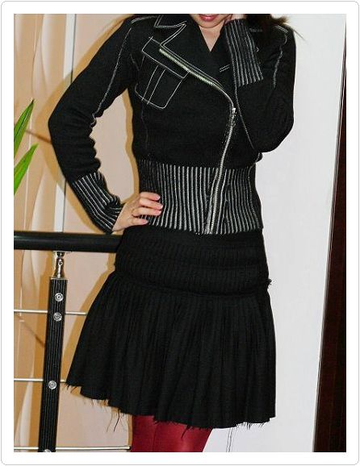
Labels Or Love @ Feb 23, 2009
《sex and the city》 有句独白：“Year after year, twenty-something women come to New York City in search of the two “L”s: labels and love.Twenty years ago, I was one of them. Having gotten the knack for labels early…I concentrated on love.
歌手：fergie
专辑：sex and the city
Labels Or Love.mp3
我爱美食 @ Feb 21, 2009
做饭，持之以恒地做饭。
这周烧的最满意的四个菜：
1、罗宋汤--用新鲜的去皮西红柿慢慢熬，配以自己炖的牛骨汤、胡萝卜、土豆；
2、肉沫蒸蛋--不用细细写了，很简单。不过这是农村自家土鸡生的鸡蛋，烧出来的颜色比超市买的鸡蛋要黄；
3、红烧牛肉牛筋--最喜欢吃牛筋之类的食品，沸水去掉肉上的血水脏漠，沥干。油热，放姜、牛肉，翻炒，倒入料酒、生抽，放入荤汤、葱、干辣椒、花椒，炖两个小时，牛肉差不多烂了，放进沸水煮熟的牛筋段，继续烧，起锅前放入糖收汁，加少许盐、鸡精；
4、咸鱼炖五花肉--以前我是一点肥的都不能吃，一吃就吐。可是张生记的东坡肉我是可以连皮带肥都能吃下的，那个肥一点不腻。第一次烧这道菜，居然烧的很不错哇，完全凭着对爸妈做菜的印象。主要是五花肉要炖的时间长一些，把那个“肥腻”给炖掉。

时.间. @ Feb 19, 2009
早晨看到有个博友的父亲昨天去世了，难过。
居然，她父亲的和我父亲是同一年出生。
时间真他妈快，真是一眨眼的功夫。
不敢想，不能想......
重要的是仍然活着的人，如何活着。
和大多数人一样我也装摸作样的活了好多年。
可是内心里却并未妥协，挣扎着，纠葛着。
那么，顺应自己的心，不要假惺惺活着，是正确的。
两个人的相机日志：2月17日 @ Feb 18, 2009
两个城市都被笼罩在阴霾之中，不得不拿以前的相片来充数。
这是最后一天的日志，我们准备等天气好了再继续。
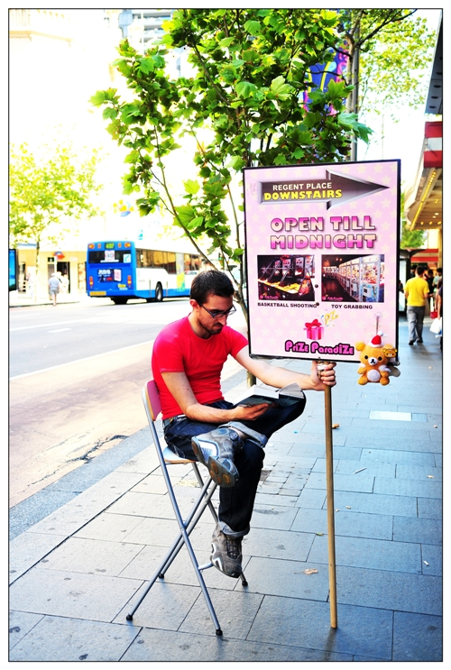
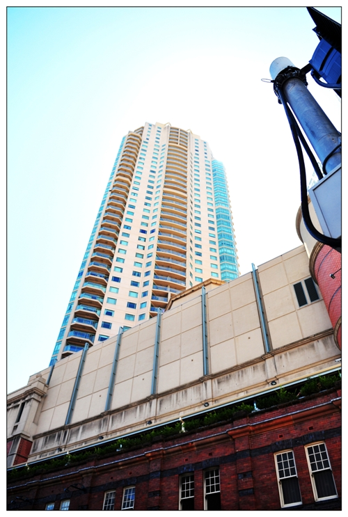

前三张是我2月4日拍摄的相片，最后一张是今天的我，又穿上了羽绒服。
心情好的状态，似乎也失去了感觉这个东西。
有谁说过：“我是因为悲哀而写作......”
大致，拍照也是这个逻辑吧？


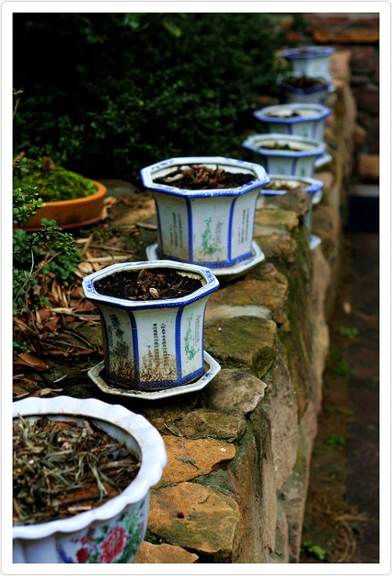
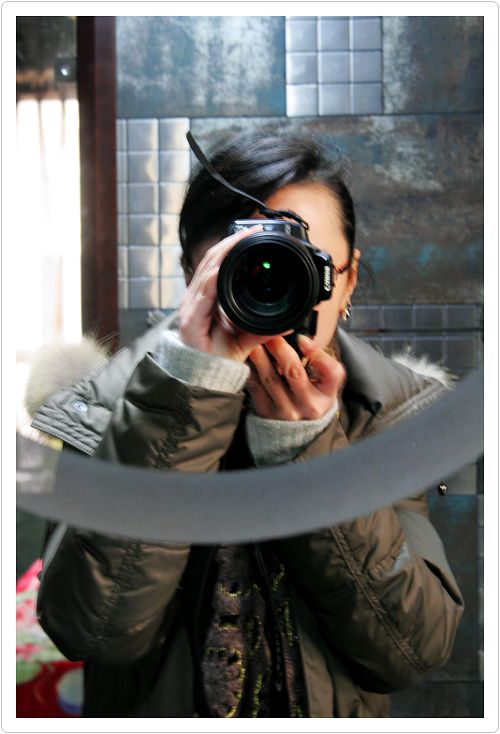
两个人的相机日志：2月16日 @ Feb 17, 2009
悉尼终于不下雨了？
南京的雨也停了，但是又重新穿回冬天的棉袄。
这组照片里有我喜欢的色系。


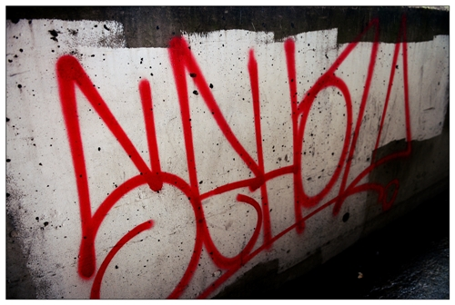
姐姐给我买了两双新鞋子，她自己买了一些花的连身裙，好开心。
不能理解的是只要是商场就不能拍照。

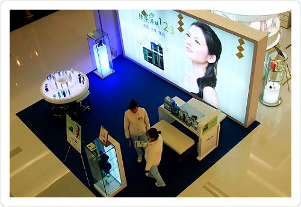


春天在哪里？ @ Feb 16, 2009
咦！早晨居然下小冰珠子了。
天气预报说今天是小雨加雪的天气。
春天，又不见踪影啦！
就业有多难？ @ Feb 15, 2009
招聘会上，一家公司要求每位应聘者必须填写一份表格，回答几个问题。这是一位女大学生填写的求职承诺!
一、谈恋爱了吗？
我的EQ很低，对男孩子没感觉。所以，五年内保证不恋爱；五年后万一不慎恋爱了，保证五年内不结婚；五年后万一不得不结婚了，保证五年内不生孩子；五年后万一不小心必须生孩子了……那应该是四十五岁以后的事了吧，你们可以考虑辞退我了。
二、能喝酒吗？
二十五年来从来没有喝过酒，不过，如果工作需要，喝；不是工作需要，但领导有要求，喝；客户有要求，喝；有酒量，喝；没酒量，创造酒量也要喝；实在喝不下去了，吃解酒药，喝；喝得烂醉如泥、不省人事、胡言乱语、上吐下泻了，那也并不表示我不愿意喝，麻烦领导直接将酒灌进我的喉咙里，只要能灌进去，就行。只有一个请求，曲终人散后帮忙将我送进医院。
三、希望什么岗位？
我是学人力资源管理的，是管理学学士，英语六级，最好能在管理岗位；不能在管理岗位，做个打字、收发信件的文书也行；不能当文书，在办公室扫地、端水、抹桌子……打打杂也行；打杂不行，下车间、到班组也行。
四、期望多少薪酬？
五十万？想都不敢想；二十万？痴人说梦；十万？绝不可能；六万？非常非常满意；四万？非常满意；两万？满意；一万？我知道不是月薪，是年薪，我也……满意。如果公司还有困难的话，打张白条，也行。
五、能出差吗？
短期的，可以；长期的，也可以。短途的，可以；长途的，也可以。与女上司一起出差，可以；陪男上司单独出差，也可以。有出差补助，坐火车，住旅店，下馆子，最好；没出差补助，坐驴车，住澡堂子，泡方便面，也没关系。
六、你还有什么要说的？
我大学毕业两年多了，跑过几十场招聘会，投了几百份求职简历，都石沉大海了。有人说，给我一个支点，我能把地球撬起来。可我今天想说的是，这么大个地球，就不能给我一个支点吗？我只是需要一个岗位啊！给我一个岗位，让我养活我自己吧！（来源：上海热线）
两个人的相机日志：2月15日 @ Feb 15, 2009
澳洲也在下雨，所以这个懒家伙没外出，所以第一张是Hank拍的，有孩子的他，玩具都搁车上啦？第二张是啥鸟？黑乎乎的，我想说那是不是....

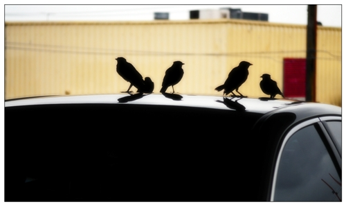
南京下雨了，还不小呢。
当我开始用相机记录日志后，才发现自己的眼睛近视的厉害。

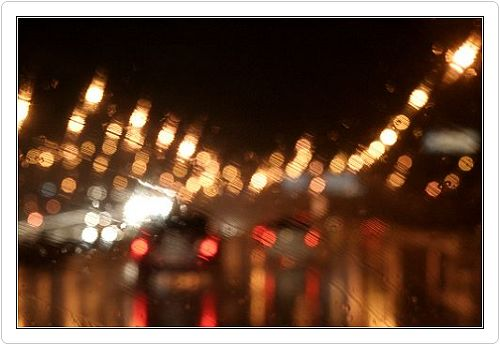
两个人的相机日志：2月14日 @ Feb 15, 2009
jiajialing说：情人节，大雨倾盆。。。eastwood的菜场依旧人山人海，开车兜了一大圈依旧没有情人的味道。好吧，那就记录一点情人节的光，情人节的影。。。挺无聊的。
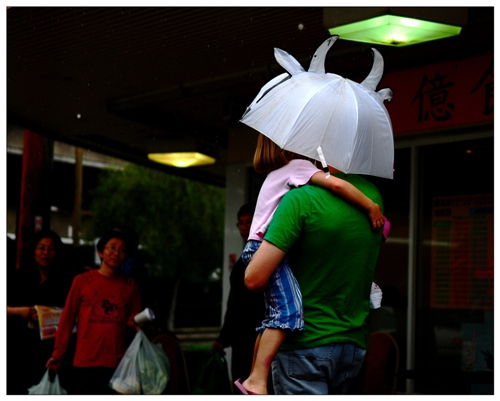


Christina：情人节带LUKE去宠物店美容，见到许多排队等着洗澡的宠物狗。
jiajialing说：第一张狗狗真他娘的可爱
Christina说：跟你长的很象，一副愤青样儿
jiajialing说：哦是啊，那你就是第二张了，一副怨天尤人的样儿
Christina说：靠，我早神清气爽了
jiajialing说：哦，了解，变成第三张了
Christina说：去死
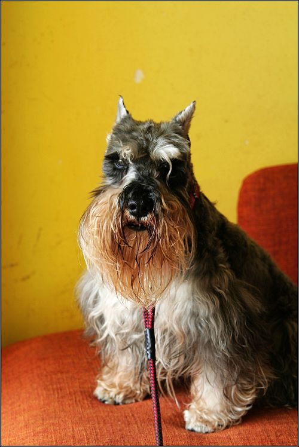

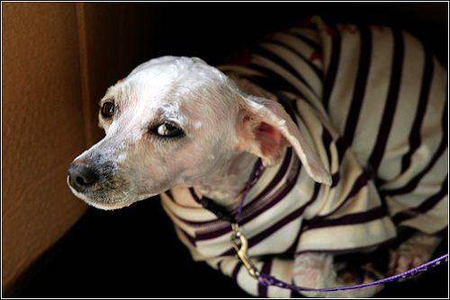
宠物世界 @ Feb 14, 2009
这是LUKE见着就追的埃及女王的黑猫；
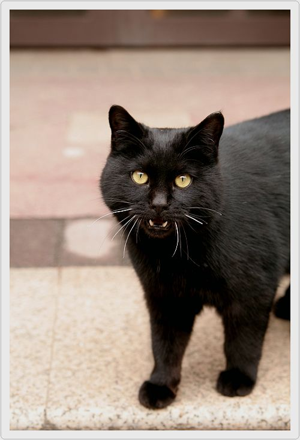
邻居家的高加索犬，是烈性犬哦。三个月大，个头已经比LUKE大了许多；
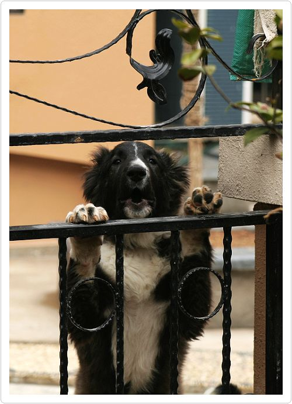
趴着围栏看LUKE，那爪子跟戴着白手套似的。

LUKE跳进院子外的小树丛和它亲亲嘴，就跑开了。
自由是多么珍贵啊，看看LUKE和它就知道。

LUKE守在树下冲着那只埃及女王的黑猫狂吠，凶狠的小白牙又暴露出来了。

两个人的相机日志：2月13日 @ Feb 14, 2009
jiajialing拍摄。
第一张居然是2007年的相片，真够怀旧的~
反复观看第一张相片，今天感受到的是焦虑。
以前看感受到的是惆怅。
你真是喜欢浓郁的色彩，张张红是红黑是黑蓝是蓝的，澳洲的色彩一定比这里丰富吧？

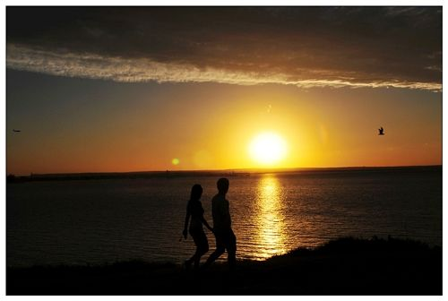

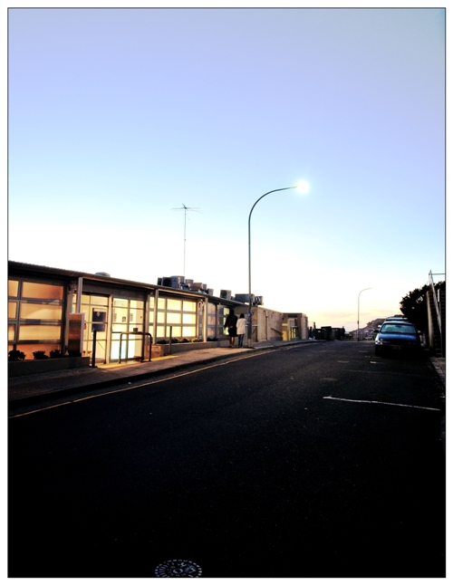
星期五，疲劳。
从精神到肉体，也许是被阴天整的。
也不想说话。
*那只装酒的盒子不知被谁扔在小区的围栏外面，中国人钱多的同时却没见素质和修养提高多少；
*今天5：51分下班，只想早早回家，充分利用属于自己的时间；
*那是晚上拍的植物，和白天有什么不同吗？
*邻居家的小朋友，手里拿着5元人民币，就那么认真地拿着，没有任何表情，总觉得怪怪的。
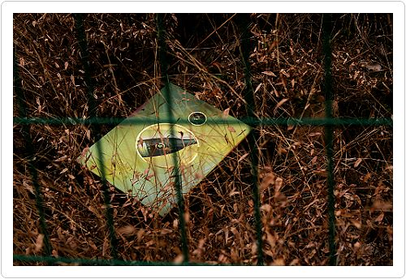


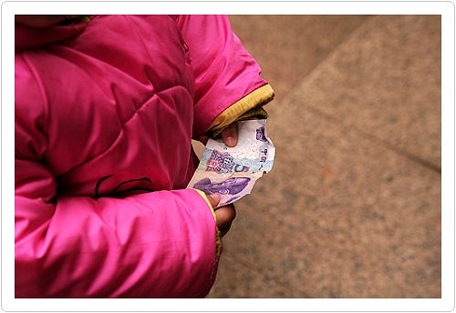
狗狗找对象 @ Feb 13, 2009
少爷写了篇为麦西物色对象的BLOG，看来做爸爸妈妈的都一样，会操心自己狗狗的终身大事。春节前我也帮LUKE物色了一个GF。在一家商店门口，有位中年妇女牵了条可卡，没我家LUKE漂亮，应该是英卡和美卡的混血。我热情地上去搭讪，问对方主人想不想给狗狗配，女主人说想呀，我马上给她留下电话号码，并索要了对方号码，还把手机里LUKE的照片给她看。她说不错不错，等我家狗狗发情的时候，就打电话联系。
LUKE是公的，所以只要母狗主人同意就行。
可以前养的妞妞是母的，不会随便让妞妞配的。生下来的BABE总要担负起责任吧。
国内养狗的秩序很糟糕，政府除了收钱给狗上户口，没见他们管过什么。任由配种、买卖是非常自由的。非典时期我家收养了一只满脸鼻涕的小金巴，我父亲带它去宠物医院看病好多次，鼻涕没有了，但是呼吸道还是有问题。如果让它流浪街头，结果就是被街道和派出所的人打死。收留它，在非典时期是很危险的行为。我们一家人商量后还是收养它了。一段时间之后小金巴变得很漂亮，和我家小小生育了两个孩子，均送给邻居了，他们现在生活的很健康。可是小金巴第二次怀孕后被偷掉了。这些被偷去的狗或被卖或被吃掉，对于偷狗的人来讲，哪怕是50元的收入，或是打打牙祭都是好的！
另外，我不能理解的是好多女性怀孕前后就会将狗狗送走，难道就没有科学的手段防疫可能发生的感染吗？那也只是“可能”。听说国外怀孕妇女打一些防疫针，怀孕期间只要不和狗狗亲密接触，是可以避免的。
从50年代到90年代，一场又一场的打狗运动，真的是狗的问题吗？而不是人的问题，是政策多变的问题？
从一个人对待动物的态度上来判断一个人和一个政府的道德水准。虽然不一定100%准确，但常常八九不离十。印度先圣甘地有句名言：“ 一个残忍虐待动物的民族，是没有希望的民族。”
请看这篇《 冷眼看打狗》
下文来自少爷：Post again for Miss Chinese Tea
麦西这个周末就满两周岁了。当妈的，开始操心她的终身大事。
查了好多资料，都说两岁时，是最好的怀孕时机。当然，狗狗的受孕时间是在她的例假期间。例假一般会延续三周左右。且半年到一年才来一次。麦西漂亮又健康，一年来两次。来例假后的第十三天到二十一天间，是受孕期。
我这个妈有点糊涂。每次等到她来例假了，才惊觉得找男朋友哇，否则时间一过，就得等半年。可在那么短的时间内，怎么能找到合适的男友？又不能跟其它种族的混婚。 前不久又错过了一次。我就想，这次早做规划，先去物色男友，定好亲，等半年后，我们就直接把她送上门去。
我先联系了一个远房亲戚--布鲁鲁的表妹。平时极少联系。但听说她有两条这类的公狗。我就厚着脸给她电话。她很诚恳地表示，很乐意帮这个忙，只是不得不说，跟你的狗比起来，我的两条真的好丑。 他们的耳朵不够长，而且性格不好。她说如果你的麦西能有小狗，她首先想买一条。我一听，这肯定没戏了。
然后上网查了附近一些养狗的，有的听了电话，然后就上门去看。一个都没看上。这时才发现，这女的长得好看了，真的很难找对象。那些公狗都显得挺委琐。加上不是亲戚，跟这么丑的公狗搞一下，我们还得付150胖子。经历了一天的搜寻，发现看到的都是那种工作型的狗（working type dog)，不是选美型的狗（show type dog)，走了弯路后，及时回头，再上网查show type dog。
这就一下打开的视野。还是有许多漂亮的，几乎跟她长得一模一样的公狗们，分散在英国各地。最近的一处，是她原来的主人处。我们不能去找她，因为她有话在先，说不想让她有下一代，所以不卖公狗给我们，也不会让她的公狗来配种。她和散布在各地的主人一样，都是英国史宾格狗俱乐部的成员。我看了一下成员手则，就是要培育更漂亮，更好的狗。因此不能随便让外人加入进来。我看到的言下之意是：垄断市场。
怎么样才能搞到一条同样漂亮的公狗呢？还要打破这个垄断，的确让我费脑子。 这些俱乐部的成员真的疯得不轻，在网上打出来的广告说，我的这条公狗已经和很多冠军约会过，并生了好多个冠军等等，然后把配种价格抬高到600胖子，还很野蛮地说，不包怀孕，搞完拉倒。 布鲁鲁一听说，那就拉倒呗，这个价格我都可以自己买条小公狗，慢慢养了。等长大，想怎么搞都行。
一年一度的冠军赛正好就在家附近举行。我想去现场看一下，或许能碰上一个象样的成员，能让我成一笔交易呢。好多漂亮的狗狗，远远看去，就象是麦西克隆出来的。一个主人很友好，我对他的五条公狗很感兴趣。我问他，你这些狗卖吗？他指着其中一条，说，它五岁，不过今天才拿了个亚军。你想要买的话，我可以考虑。又问我，你买了后，会有时间看护它么？我假装说，当然了，我是家庭主妇，平时闲在家没事，才从中国过来，很寂寞，想要条狗来陪陪。 他态度马上变了，说要那样的话，待会儿你跟我老婆说一下，她要是也同意的话，我们就卖给你。不过，你只可以买狗，我们不会卖给你它的出生证明的。 （这是防止拿此狗作种狗的一种方法，在英国，没有出生证明的父母狗，生的小狗是卖不出去的）。我一听就知道没戏了。这时候，突然就看到了麦西的前主人，正在展她的麦西的妈妈或姨妈，外婆之类的。我和布鲁鲁吓得恨不得戴上面具去。胡乱看了一把，只好灰溜溜回家了。
唉，现在唯一的办法是去买一条刚出生的纯种狗。这些俱乐部的成员垄断了市场，但还是向外人出售小狗的。还是有很多谎要撒，要假称没有狗，只是买来当宠物养，等等。联系了一家，远在苏格兰。这月中旬小狗们两个月大，就可以往外出售了。但经过这番折腾，加上长路漫漫，也不知道结果如何。好的话，麦西会有个姐弟恋了。
两个人的相机日志：2月12日 @ Feb 12, 2009
jiajialing拍摄。
*这是用什么软件调出来的颜色，真好看。
*新闻里说澳大利亚的“多美滋”奶粉也让宝宝们吃出了肾结石，可官方并未证明此事，孩子们的家长准备联合起来起诉。
*国内的芝华士、红方黑方假酒成灾，一瓶成本价才17元，批发给经销商20元，娱乐场所和酒店从经销商那里批发70~100元/瓶，到了消费者那里就是600~1000多元了。那外形做的真是一模一样。


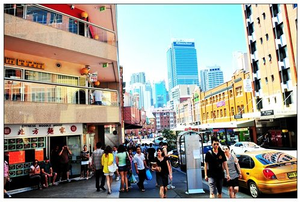
Christina拍摄。
我的颜色开始在这个季节里上演。
Sherry说：“你的气色越来越好~”
心情好，身体才会好啊。
可就在昨天我还朝emma票务河东狮吼了一番。
明天就能收到定购的票啦，好开心！
在家人安排下，我去医院做了个全套检查，医生说很健康，为这话我又会很开心。
不过部分化验结果要等到明天才能看到，不能乐观太早。
有关开心还是需要自己调整心态、心境，远离不开心的人和事。
这段时间连续听到两个朋友抱怨工作上想一展身手，却又感到很无奈，停顿不前。
我们为什么不愿老去，还保有着年轻心态，是因为在生活中我们不愿意妥协，如果你不想结婚可以不结婚，在我们还没弄懂这个世界之前还是不要孩子的好。可是，工作却不一样了，尽力而为之后还是不能改变，那么顺其自然吧，干吗和自己过不去呢？
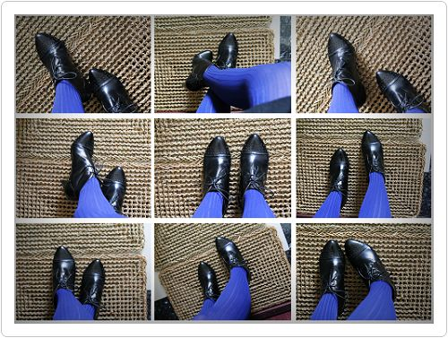


两个人的相机日志：2月11日 @ Feb 11, 2009
和薇安的相机日志持续一周，昨天结束。
今天开始和在澳大利亚悉尼的jiajialing继续下面的相机日志。
jiajialing是我现实生活中的好朋友，我的摄影一直跟随他的步伐前进的。
可是我这个跟随者并没下太多功夫在研究理论上，更多的是随性而为。
由于晚上和sherry约了见面，照片通过邮件传送过来。那么，今天我们将没有独白和相互的评语。澳洲快进入秋季了吗？以往他的相片能带出人内心里的东西，虽然他时常把我拍的很丑：）这次......仍然期待有佳片共享！

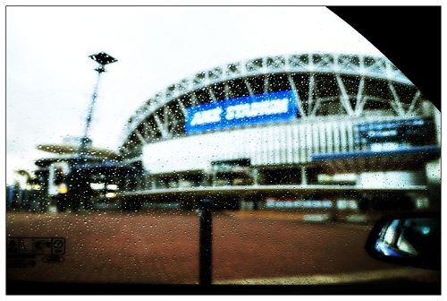


这张是我用手机拍摄的。
左图是个广告灯箱，右图是看菜单的sherry，这些光线的拖影和模糊的画面具有某种缺陷的美感。
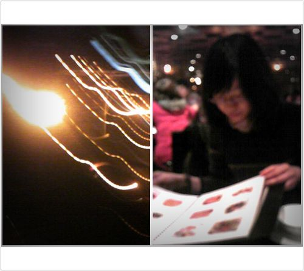
狗狗 @ Feb 11, 2009
感谢少爷提供给狗狗“理发”的信息。
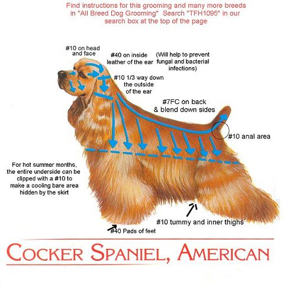
少爷养了一条史宾格犬，我的邻居有条史宾格和麦西一样一样花斑的，是警犬研究中心进口犬的第二代。据我对这两只狗的观察，近亲也有差别。
史宾格：稳重、冷静，只认主人，对其他人比较冷淡。步伐轻盈、矫健；
英卡：得瑟、易兴奋，小碎步，后脚有点内八字，天真的一塌糊涂。
麦西，迷人的小样儿！
回头想想LUKE，那头顶是杂草丛生哦~

麦克是只5个月大的公狗，在英国公狗小于七个月，与母狗生下的小狗不能正规注册，算
黑户口。当麦西遇到麦克，麦西穿上了内裤！

彩.信 @ Feb 11, 2009
春节收到云南风景彩信若干，132开头的手机号码，我充满真诚地一个字一个字回复人家如何如何美，谢谢分享，祝愉快假期.....
春节结束，问去云南的张三，问李四，皆说没有给我发过彩信。
不忍心再继续问王二麻子了......
数码传真 @ Feb 11, 2009
这段时间忙着拍照，没写几个字，还是有一些话要说滴。
公司安装了3G-FAX数码传真，以后通过自己的电脑便可收发传真，这个不希奇，多少年前公司安装过类似的软件，后来不了了之。这次软件有意思的是需要签章的文件，也可通过3G-FAX传给老板，签章后再发回来，速度蛮快。以后我们的屁股可以不用离开椅子了，什么都可以通过电脑来完成。
高科技好是好，苦了高龄职员。
两高之间的关系可以用我昨晚吃的鸭掌来比喻，微辣的俨然还是享受，重辣的就是折磨。两只下去，敢情一张嘴能喷出火来~当然从微辣到重辣，是可以培养滴！
MEN ARE JUST HAPPIER PEOPLE @ Feb 10, 2009
NICKNAMES
* If Laura, Kate and Sarah go out for lunch, they will call each other Laura, Kate and Sarah.
* If Mike, Dave and John go out, they will affectionately refer to each other as Fat Boy, Godzilla and Four-eyes.
EATING OUT
* When the bill arrives, Mike, Dave and John will each throw in £20, even though it's only for £32.50. None of them will have anything smaller and none will actually admit they want change back.
* When the girls get their bill, out come the pocket calculators.
MONEY
* A man will pay £2 for a £1 item he needs.
* A woman will pay £1 for a £2 item that she doesn't need but it's on sale.
BATHROOMS
* A man has six items in his bathroom: toothbrush and toothpaste, shaving cream, razor, a bar of soap, and a towel.
* The average number of items in the typical woman's bathroom is 337. A man would not be able to identify more than 20 of these items.
ARGUMENTS
* A woman has the last word in any argument.
* Anything a man says after that is the beginning of a new argument.
FUTURE
* A woman worries about the future until she gets a husband.
* A man never worries about the future until he gets a wife.
SUCCESS
* A successful man is one who makes more money than his wife can spend.
* A successful woman is one who can find such a man.
MARRIAGE
* A woman marries a man expecting he will change, but he doesn't.
* A man marries a woman expecting that she won't change, but she does.
DRESSING UP
* A woman will dress up to go shopping, water the plants, empty the trash, answer the phone, read a book, and get the mail.
* A man will dress up for weddings and funerals.
NATURAL
* Men wake up as good-looking as they went to bed.
* Women somehow deteriorate during the night.
OFFSPRING
* Ah, children. A woman knows all about her children. She knows about dentist appointments and romances, best friends, favourite foods, secret fears and hopes and dreams.
* A man is vaguely aware of some short people living in the house.
THOUGHT FOR THE DAY
A married man should forget his mistakes. There's no use in two people remembering the same thing!
SO, send this to the women who have a sense of humour and who can handle it.... and to the men who will enjoy reading it.
两个人的相机日志：2月10日 @ Feb 10, 2009
薇安：斜进屋子的阳光，还有午后煮的一壶柚子茶。是我最后记录的幸福。
而信箱筒已经在我们生活中的比重越来越小。
Christina：咿！我们不约而同地都拍了阳光~好象我从来没打开过信箱，虽然看到里面插着信件。遇到你我才知道什么是真正的追求完美。
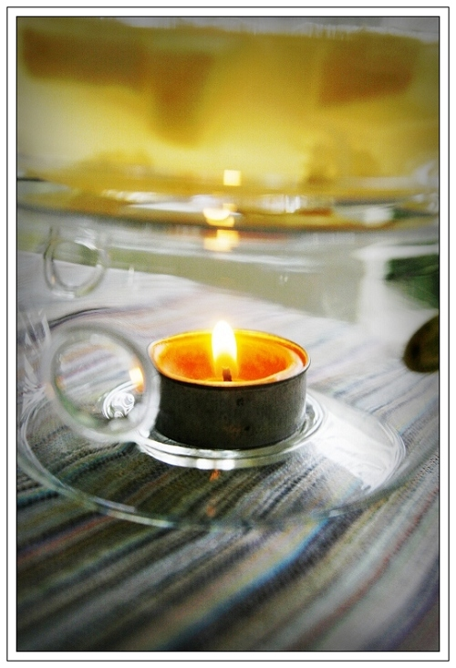
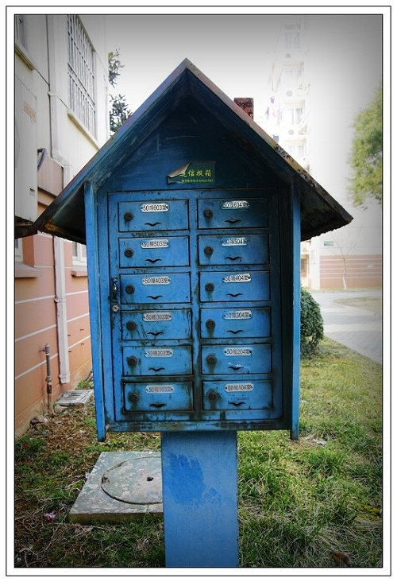

Christina：大太阳哦，气温一下回暖到15度了，据说明后两天会到20度！阳光明媚，心情也明媚！
薇安：太阳果然暖洋洋，温度直升。利用好这个大好春日的最好办法就是晒被子吧。。。
老百姓的小幸福。
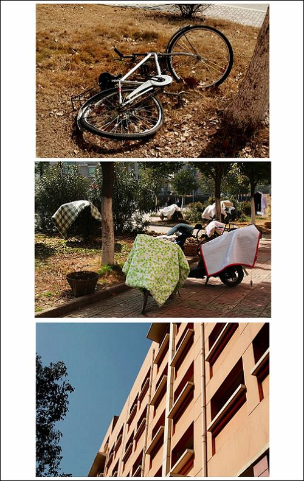
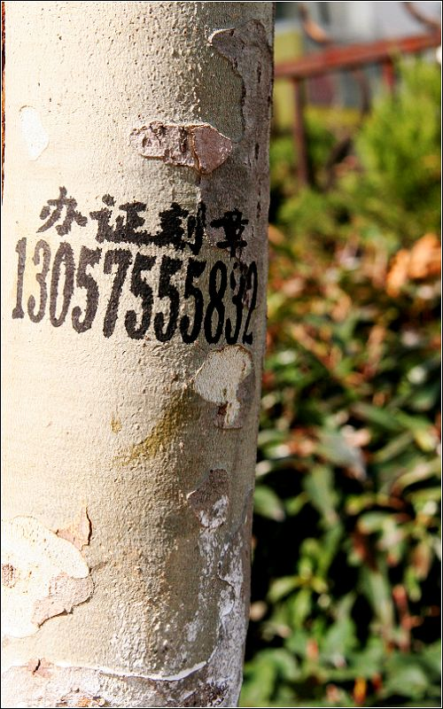

两个人的相机日志：2月9日 @ Feb 09, 2009
薇安：我这么有兴致，中午特意打车去看那个元宵的台湾小吃展。风很大，可我还是打包了好几样回来吃。贵虽贵点，也要活得有滋有味嘛。
Christina：这么多好吃的哇，怎么会是台湾小吃呢？明明就是俺们大陆的小吃嘛：）那个鱼是什么食品啊？
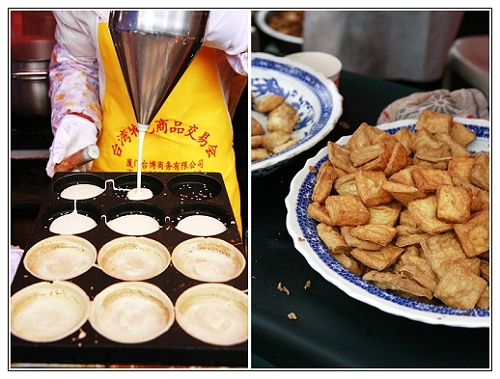
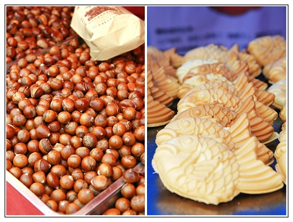
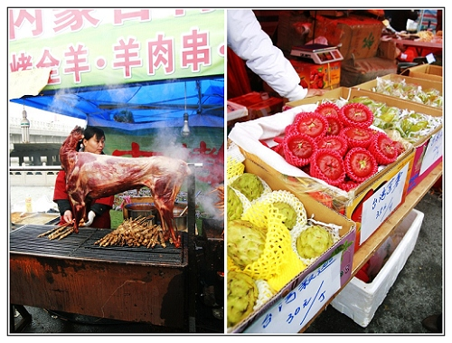
Christina：元宵节哦，外面几个小时连绵不断的鞭炮声向这个春节做着疯狂的告别。回到家，LUKE就开始粘人了，我就半个屁股坐在椅子上，要是跌地下，非扭断这小子的脖子不可！刚才LUKE被一阵急促的鞭炮声惊醒，掉地上了，朝着鞭炮声的方向怒吼~
薇安：元宵的烟花在耳边彻响了整晚。原来我们还是很传统的。没想到LUKE小伙这么粘人啊，下次要给我来个稍息立正站好。
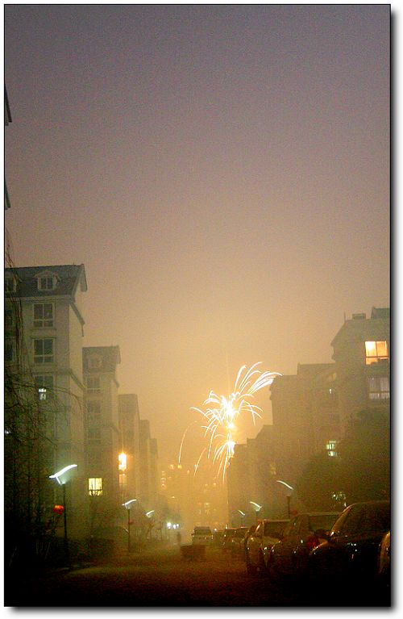
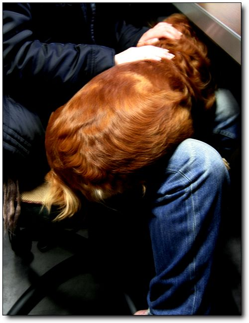
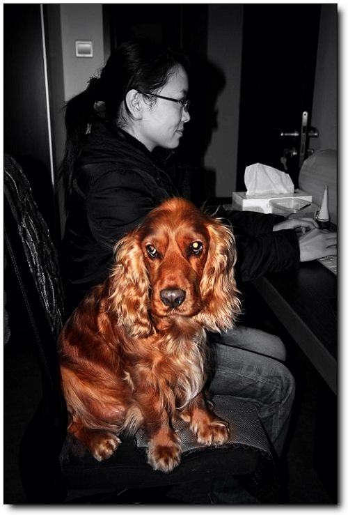
两个人的相机日志：2月8日 @ Feb 08, 2009
薇安：羽球运动得从小练起！我们都是业余爱好者而已。坚持哦。我喜欢这个用旧厂房改的羽馆，火车厢式的房顶和蓝绿搭调，最主要是窗外射进的阳光，让人恍惚。
Christina：打羽毛球可比打网球出汗多哦，这个天小心着凉。今天你拍的照片我都喜欢。
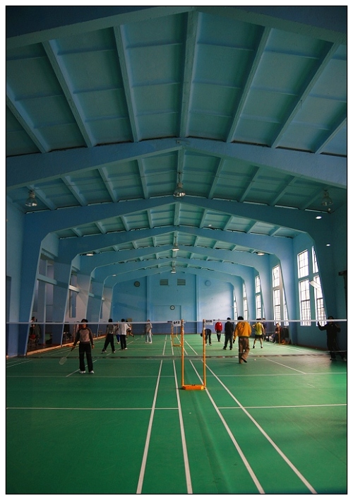


Christina：周末宅在家里，默默地生活，追随自己内心的渴望。这种沉浸能让我体会到一种全身心的依赖，我是不是真的稳定下来了？
薇安：细致用心的女主人总能以漂亮的餐厅布置令人垂涎。从细节见品味。
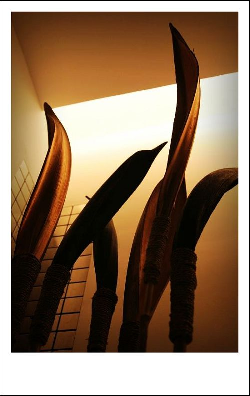


两个人的相机日志：2月7日 @ Feb 07, 2009
薇安：城市的日新月异犹如孩子的成长般迅速。我更爱看孩子们的笑脸。
我说，来排一排拍个照，立马站队按快门。我喜欢和你们说话，配合太好了嘛。
Christina：苏州和南京看上去差不多了，我们都生活在冰冷的钢筋水泥之间。孩子们在玩纸飞机吗？

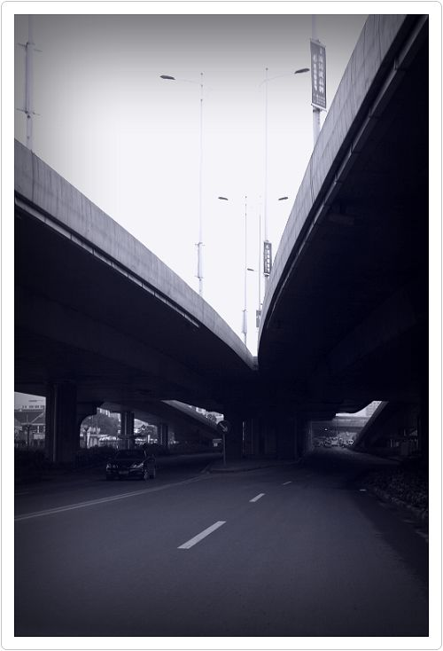
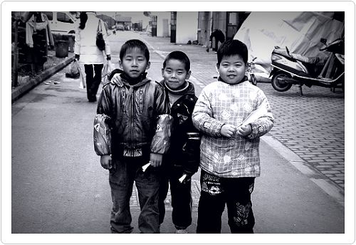
Christina：图一、星期六，阴。坐在茶几前边看书边吃零食。这才发现玻璃烛台上已落满灰尘，犹如我那落满灰尘的浪漫一般。
图二、冗长的电话，有她平衡着。
薇安：哪个女人没有浪漫情怀，哪个女人不爱小资，哪个女人不爱收藏装饰品。
喜欢思考的女子是美丽的。
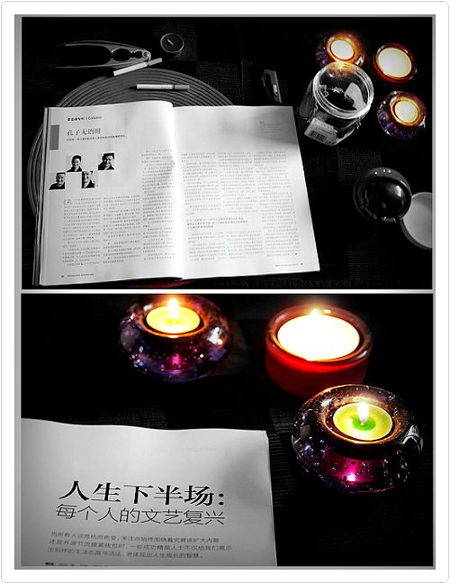
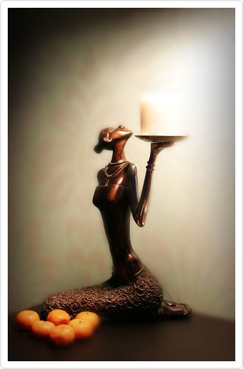
两个人的相机日志：2月6日 @ Feb 06, 2009
薇安：我喜欢对称，也喜欢斜角构图，别取笑我的呆板。暖棚的草莓，突然让人那么怀念夏天。亲爱的，其实我想让你猜那一朵梅花我拍的是什么？
Christina：这个天就吃草莓，真奢侈。
我就不喜欢对称的结构 ， 那朵梅花是杯盖吗？
， 那朵梅花是杯盖吗？

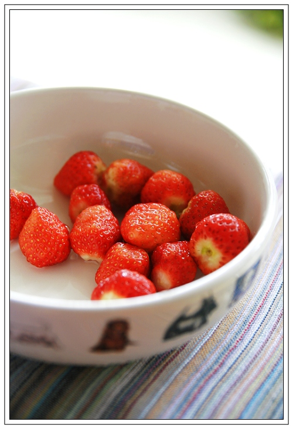
Christina：图一、中午在家门口遇到这只野猫，冬天来临之前在地下室给它弄个窝，还有猫粮和水，窗户留了供它进出的空隙。小黑一点不怕人，白天会在保安的小房子里烤火取暖，好肥的黑猫。唤它几声就会跟着你走，我就是这样把它引到地下室去的。luke见了它没命地追，可狗永远追不上猫，因为猫会上树；)树下坐着守侯的呆luke~
图二、在KFC解决的午饭，外面这位大姐来回走了两趟，令人眼前一亮。
薇安：你猜出来猫在思考什么了吗？每个生命都有属于自己的快乐和自在，我们谁也别羡慕。


两个人的相机日志：2月5日 @ Feb 05, 2009
薇安：中午的快乐时间留给了浴室。哼着我爱洗澡的曲子将水雾慢慢弥漫起来。
Christina：依然冷冷的春，贪恋着橘色灯光里的暖。
浴室里“有女如玉，颜如舜英，舒而脱脱兮，无感我帨兮......”
那张小凳子我也有一只：）是湖兰色的。
整个浴室的色调和摆设，反映出一个典型的女孩子的内心。

Christina：图一、阳台外的铸铁花艺，模糊了景色；
图二、别忘了有句针对哲学家的谚语是这么说的：“按照我说的做，别按照我做的做。”
图三、被人丢弃的红掌，整棵耷拉着。我收留了它，让它居住在一个白色的陶瓷花盆里，根部浇透水，中午看到它微微挺起的身体，好开心~
薇安：文字里的快乐和水池边的一点绿，透过阳光撒进她的内心。
那一点点的烦扰是否已随风而逝？

“灰子”的留言 @ Feb 05, 2009
灰子 Says:
1、摄影是一种减法艺术，需要培养一种善于提炼和概括的思维及独特和多元的眼光。通过观察和感悟，把自己感受到的情景和情绪从纷繁复杂的事物中抽离出来。
2、画面之所以干净和唯美，是因为首先拍摄者需要具备美的理解；其次通过构图上的取舍、光影上的对比、景深上的虚实等使画面干净或者达到自己的意愿。
3、很多喜欢摄影的人不懂得如何通过摄影表现自己的情绪、如何表现自己的生活、如何关注身边的亲密朋友、以及对社会的看法和理解甚至批判。而是仅把目光投向花花草草、山山水水以及漂亮的美美。如你能注重记录自己的生活，并能把自己的生活记录的纯粹透彻，再加入自己的点儿小情绪，那已经是非常好的照片了。这个时候构图、光影、景深也显得不那么重要了。
4、摄影或者拍照片其实是很个人的东西。是发现自己、认识自己；自己看外界，自己过生活的真实记录。像戴安娜·阿勃丝、南·戈尔丁、萨丽·曼、辛迪·舍曼等这些享誉全球的女摄影家也都把目光积聚于此。
5、所以，摄影能否愉悦自己、能否被自己喜欢就足够了。若要再上升一个层次，像尤金·史密斯，塞巴斯提奥·萨尔加多，约瑟夫·寇德卡那样，摄影就会很辛苦，需要付出很多代价。
呵呵，以上是对你留言的答复，纯粹是自己的浅显的理解，望能参考。
以上来自灰子的留言，推荐他的blog"灰巷"。
两个人的相机日志：立春 @ Feb 04, 2009

新年.礼物 @ Feb 03, 2009
去年过年给自己买块手表；
今年......给自己换了个新手机作为新年礼物。
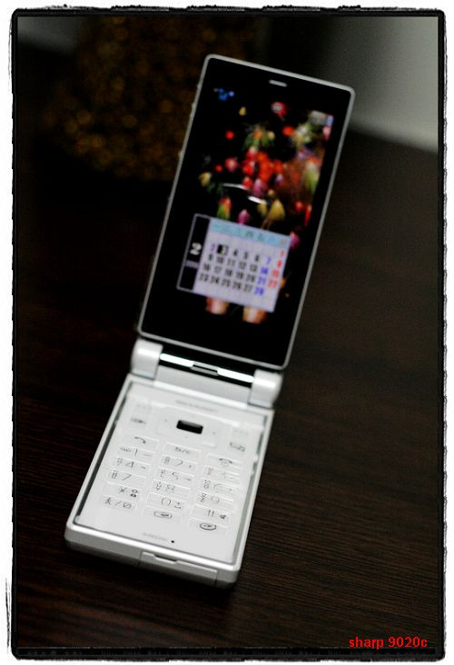
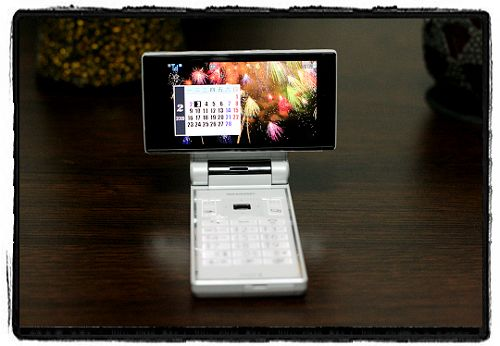
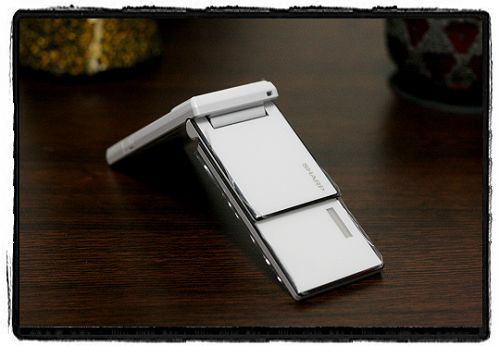
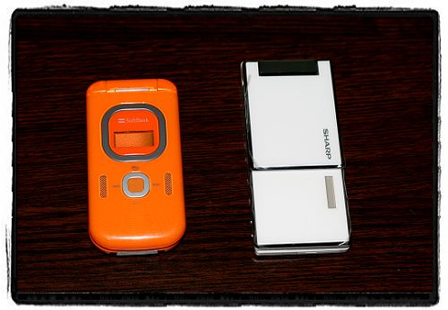
相机写的早晨日记 @ Feb 03, 2009
春节期间捧着一月份的《心理月刊》阅读，发现一篇有意思的文章，写两个好友用相机记录彼此的早晨，一个是设计师，另一个是记录片的导演，分别居住在上海和北京。这两位想象力丰富的体验者，她们的照片里隐藏着许多从相片延伸出来的空间和故事，这些故事和她们的过去、当下和对未来的期望产生了某种联系。比如经常出现的一只叫左门卫的猫，那是她们从10年前就开始一起养的猫，又比如一位被记录片导演想象成花婆婆的老人，你会发现导演住所周围有各种老人，还有从拥挤空间里挣扎出的小草小花，她把它们想成一个童话，就好象我们小的时候能把一小片丛林想象成大森林一样......
两个女子进行这个体验，因为觉得有意思，还因为她们隐隐感觉到画面的内容会和自己的过去产生某种连接。3个星期，她们每天晚上都会通过MSN交换彼此的早晨日记，并给对方写一句话，让对方通过照片感受到自己的生活。设计师说自己是一个早晨从中午开始的人，所以，为了这次影象的体验更接近内心，不带一丝辛苦和束缚感，早晨的概念变得广泛----你睁开眼的那段时间，也就是这一天最初的一两个小时。
记录片导演说：“在这段短暂的时光里，我们有那么几秒钟甚至很短也许是几分之几秒，我们全然忘记自己几岁，身处何方，忘了昨天做了什么没做什么，今天还要继续努力做些什么放弃什么。我们全然地享受现在这一秒钟，而不再寻寻觅觅，不再凄凄切切。......”
你会说哦，我讨厌下雨，它让我去往公司的路途充满泥泞。
哦，我今年已经29岁了。
哦，昨天晚上老板那句话到底有何弦外之意呢。
哦，我今天要如何去获取那个女孩的欢心。
其实我们并非讨厌雨，在乎年龄，造作地去避免别人对我们的偏见，或者刻意地去做些事情来获得他人的好感，这些并非我们的真心本性。不信？感觉一下早晨，并将早晨的感觉扩延。
设计师说：“......也许我们原来并不知道自己的内心是什么样子的，但是通过照片，我们也许更容易看清自己，以内为我们是在拍摄自己内心的世界。‘泥上偶尔留指爪，鸿飞哪复计东西’，人的生命转瞬即逝，而生活将一往无前；如果哪天人都已垂垂老去，我想镜头留住的不仅是一个生活的残影，还有隐藏于镜头后的心情。
相机为什么存在？时间会抹煞部分记忆，这个时候我们发明了相机；当我们需要感受他人生活之时，我们发明了相机。但有时候，为了更好地生活，不仅需要记录真实的感受，还需要知道如何遗忘。我们按下快门，我们记录，我们销毁，什么选择都可以，只要能够有助于我们健康地生活。”
她们的体验启发了我，觉得非常有意思！于是，邀请苏州的薇安一起尝试，她欣然答应，让我好不开心。起初想在茶上登一个邀约，可是担心心理、审美的差异，会让第一次体验落败而终。思来想去，想到了薇安，一个通过BLOG认识的女孩，从未谋面，只是相互看对方的文字和相片，蛮欣赏她拍摄的视角。如此，我们真的可以通过相片去了解和感受未知的生活空间。呵呵，约好明天开始，以为明天是立春，结果今天已是立春了，不遗憾不遗憾，重要的是我们共同做的这件事情。但是，考虑到我们都是坐班制的工作，早晨实在有些匆忙，我们将记录改成中午，对于一个上班族来说，中午就象是一段行程中休息喘息的停靠站，短暂的放松，放眼四周的时间。体验从明天开始到10号结束，希望彼此能发现生活里那些动容之处，那些被忽略了的细节，留下心情的记忆！enjoy~
没有兑现的承诺 @ Feb 03, 2009
这则小文让我想起以前很多那些没有兑现的承诺，并不是有关人生、命运的承诺，而是些非常小非常小，小到芝麻那么点儿的承诺，这些小芝麻堆积成一个大大的失望，乃至绝望。此后，不要听对方说什么，而是逐渐学会观察对方究竟做了什么。
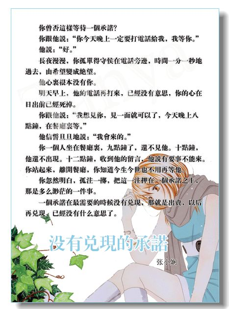